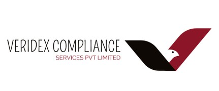

Your Trusted Partner in End-to-End KYC and Regulatory Assurance
Veridex Compliance Services Pvt Ltd delivers secure, scalable, and globally aligned KYC and compliance services. Our end-to-end approach ensures institutions can confidently meet evolving regulatory requirements while maintaining operational efficiency and client trust.
At Veridex, we understand that compliance is a critical pillar of institutional trust and sustainable growth. Our tailored services are designed to support each stage of the compliance while meeting the unique regulatory obligations of our clients.
Email: info.veridexcompliance@gmail.com | Phone: +91 7355783470